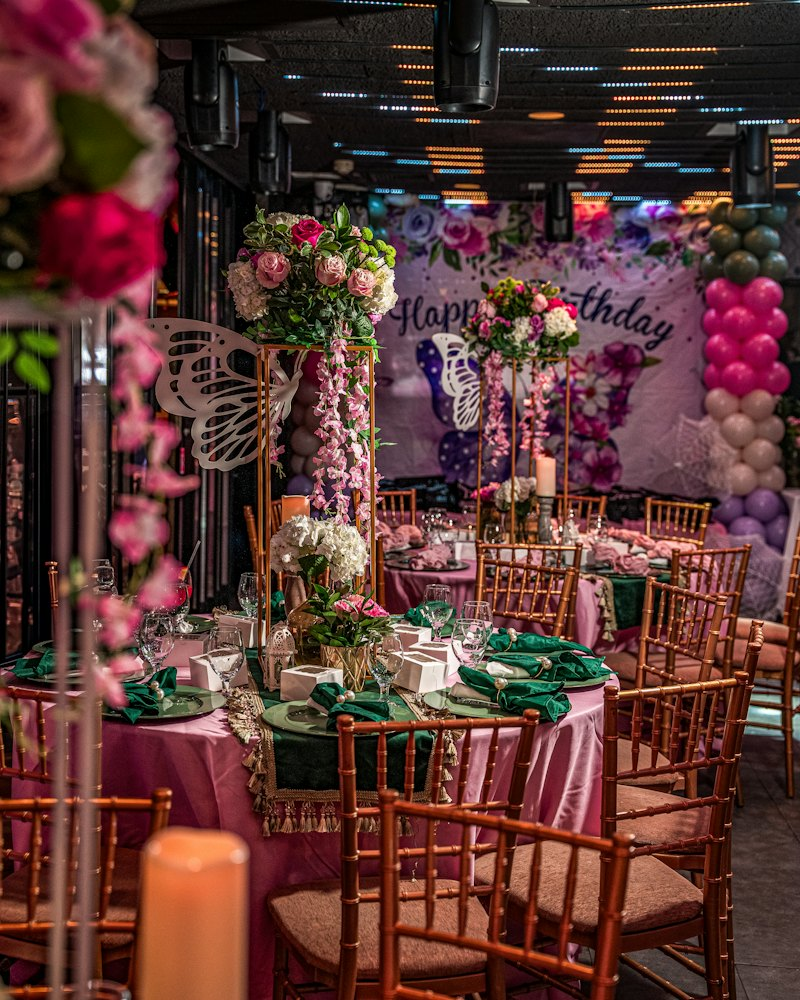
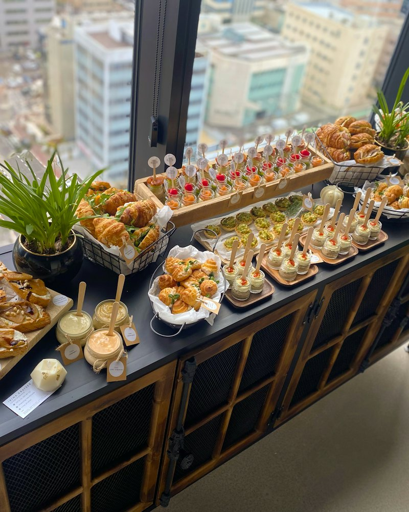
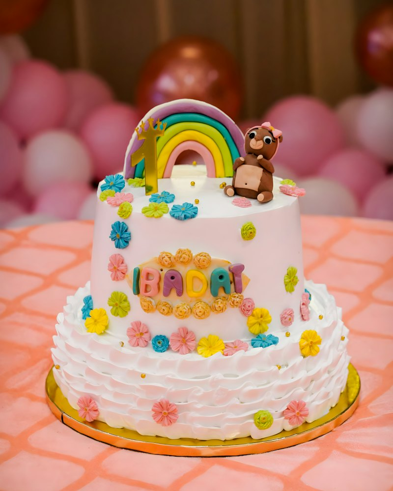
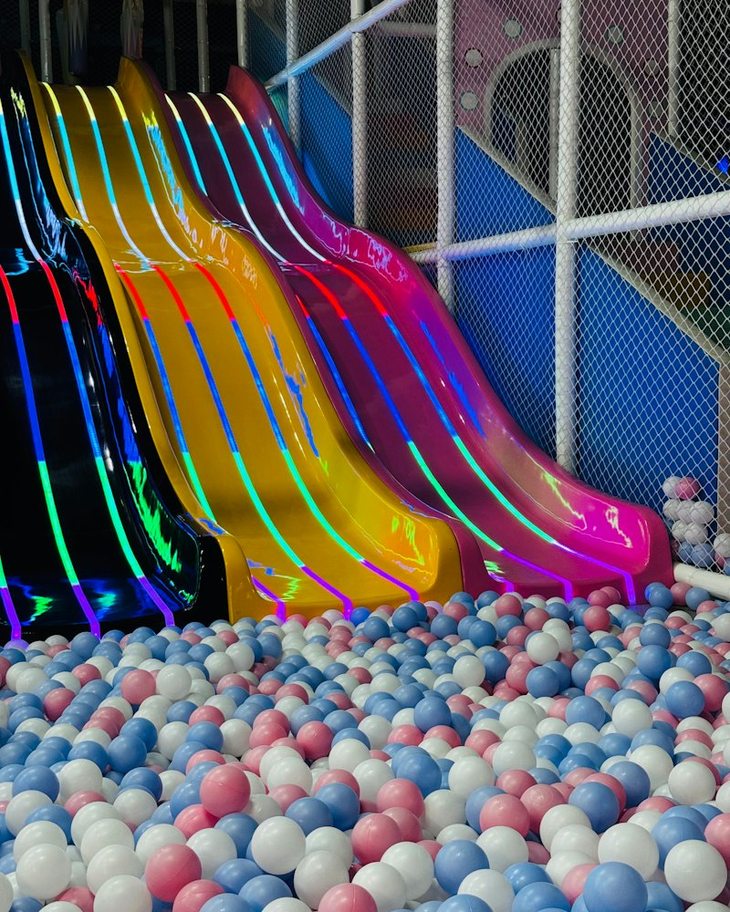
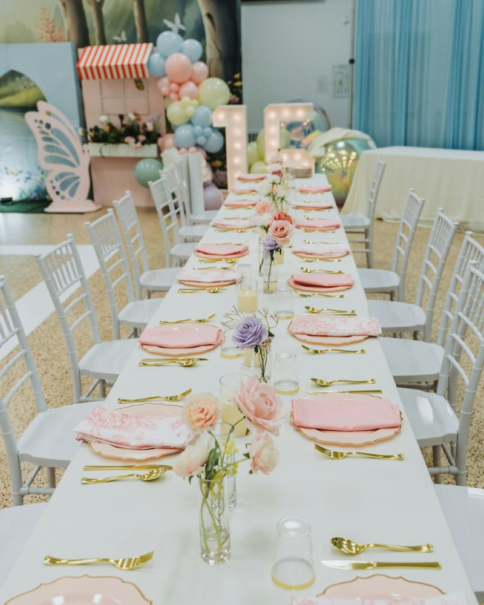
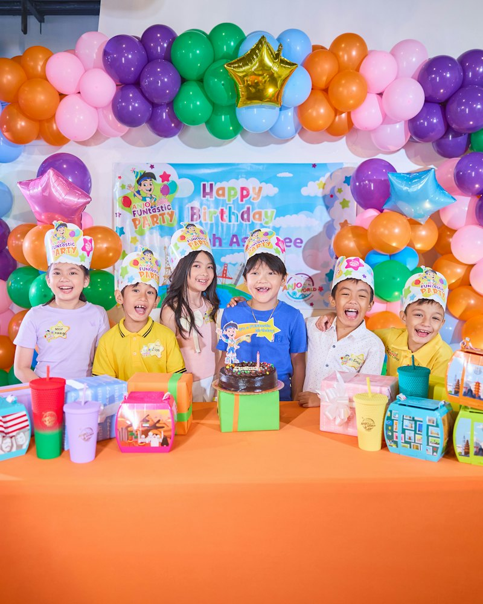
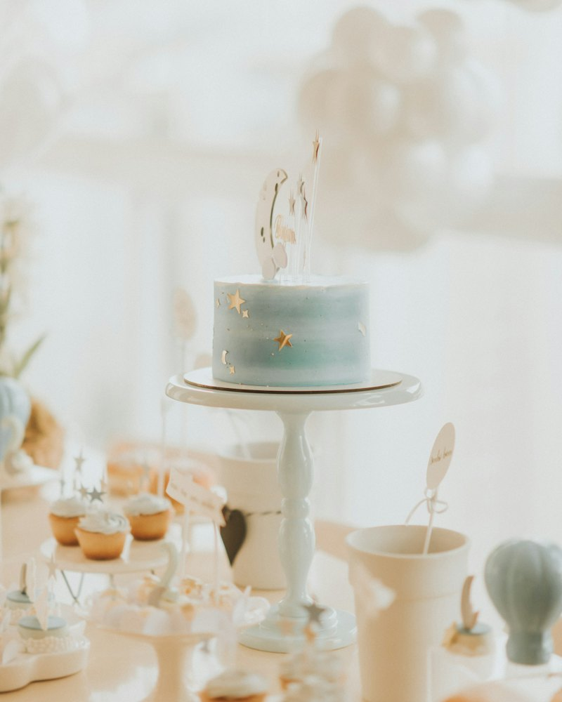
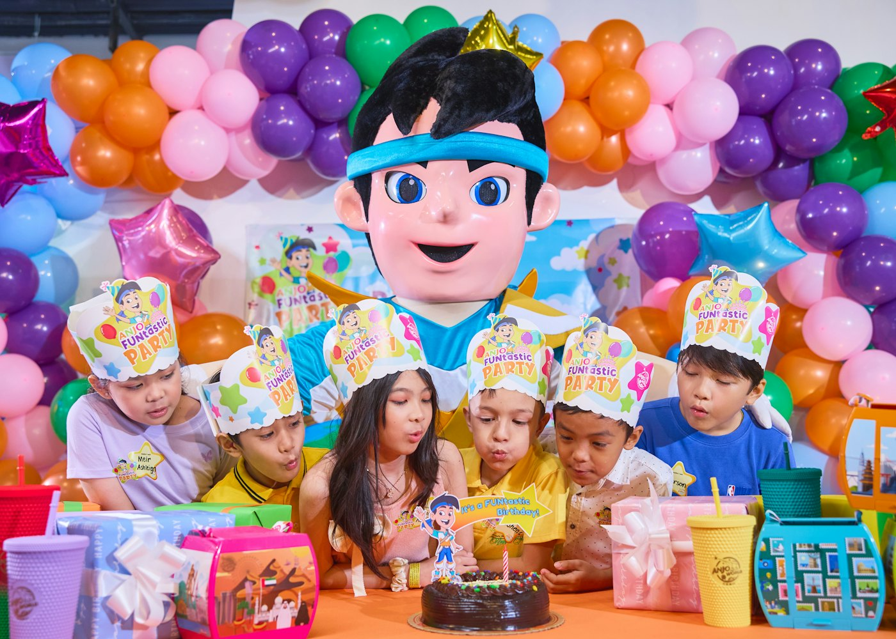
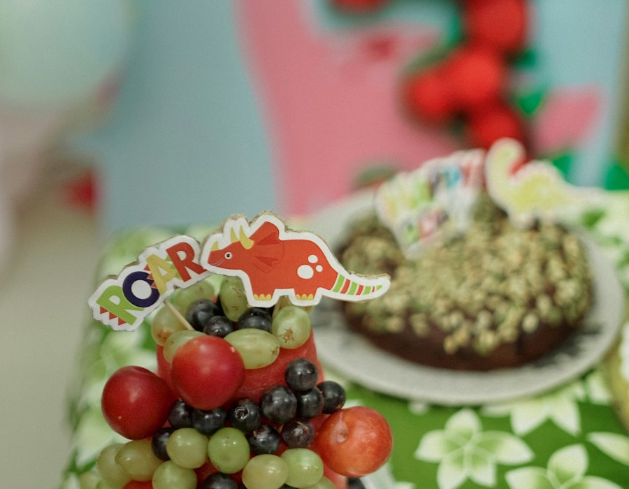
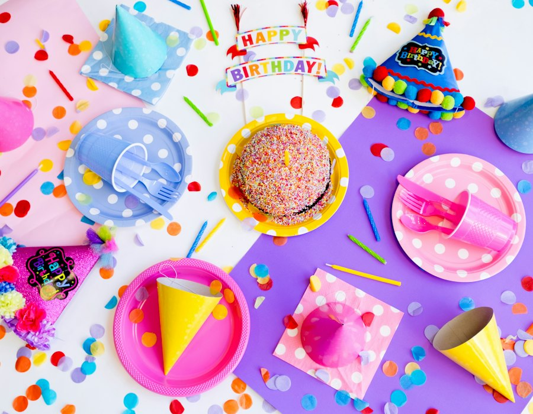

“Somos um buffet completo para sua festa! Com uma equipe incrível, comidinhas deliciosas e estrutura novinha.”
“Estamos prontos para realizar seu grande dia com muito amor e carinho!”
- 13,4 mil seguidores
- no Instagram @aquarelaespacodefestas
- Salão próprio
- na Rua Conselheiro Antônio Prado, Parque Itamarati
- Buffet completo
- equipe, comidinhas e estrutura no mesmo lugar
- No coração de Jacareí
- para você e seus convidados se sentirem em casa
O que a sua festa pode ter
Tudo pensado para os pais só chegarem e aproveitarem. Toque em um item e pergunte direto no WhatsApp.

Salão de festas
Espaço próprio, decorado e pronto para receber a família.
Perguntar
Buffet de salgados
Comidinhas quentinhas servidas durante toda a festa.
Perguntar
Bolo e doces
O bolo do parabéns e a mesa de docinhos do tema.
Perguntar
Decoração temática
Painel, balões e mesa no tema que a criança escolher.
Perguntar
Diversão das crianças
Espaço para a criançada brincar enquanto os adultos curtem.
Perguntar
Mesa dos convidados
Mesas postas e equipe servindo, para ninguém ficar sem nada.
Perguntar
Aniversário infantil
Do primeiro aninho aos dez anos, com cara de cada criança.
Perguntar
Outras comemorações
Chá revelação, batizado e festas de família no mesmo salão.
Perguntar
Texto de exemplo e fotos ilustrativas. No site final entram os pacotes, o cardápio e as fotos reais da Aquarella.
Pedir os pacotes no WhatsAppFesta com todas as cores
Fotos ilustrativas. No site final entram as festas reais feitas no salão da Aquarella.



Como reservar a sua data
Texto de exemplo. No site final entra o passo a passo que a Aquarella usa.
- Chame no WhatsAppConte a data, a idade da criança e quantos convidados você espera.
- Conheça o salãoCombine uma visita no Parque Itamarati para ver o espaço de perto.
- Escolha o temaDefina com a equipe a decoração e o cardápio da festa.
- Só aproveiteNo dia, a equipe cuida de tudo e você curte com a família.
Onde fica
- Endereço
- R. Conselheiro Antônio Prado, 156 – Parque Itamarati
Jacareí – SP, 12307-410 - (12) 99772-4104
- @aquarelaespacodefestas
- Visitas
- Combine o melhor horário pelo WhatsApp
Perguntas frequentes
Quantos convidados cabem no salão?
A capacidade e os pacotes são passados pelo WhatsApp, de acordo com a data e o tipo de festa.
Posso visitar o salão antes de fechar?
Chame a equipe no WhatsApp (12) 99772-4104 para combinar um horário de visita.
O buffet já vem incluso?
A Aquarella é um buffet completo: equipe, comidinhas e estrutura no mesmo lugar. Os itens de cada pacote são explicados no atendimento.
Fazem outras festas além de aniversário infantil?
Conte qual é a comemoração pelo WhatsApp e a equipe explica o que dá para fazer no salão.
Texto de exemplo. No site final entram as respostas da própria Aquarella.
Vem ser feliz com a gente.
Chame a Aquarella no WhatsApp e consulte a data da sua festa.
Consultar datas no WhatsApp